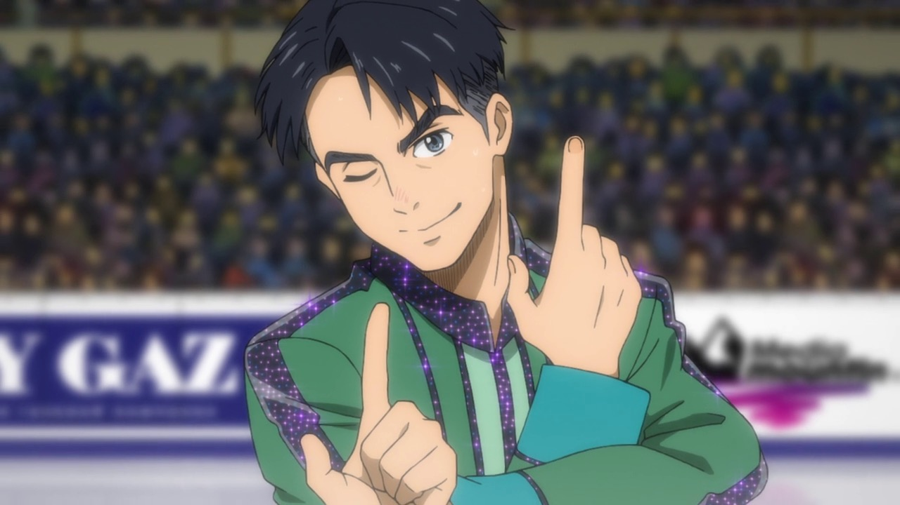

The characters of this anime show a different, very unique set of personalities being from several countries, but they all have one in common:
they have a passion for skating.

Male
Nationality: Japanese
Birthday: November 29th (age 23-24)
Height: 173 cm
Family: Hiroko Katsuki, Toshiya Katsuki, Mari Katsuki, Viktor Nikiforov (fiancé)
Coach(es): Celestino Cialdini, Viktor Nikiforov (current)

Male
Nationality: Russian
Birthday: December 25th (age 27-28)
Height: 180 cm
Family: Yuuri Katsuki (fiancé)
Coach(es): Yakov Feltsman

Birthday: March 1st (age 15)
Height: 163 cm
Family: (his beloved grandfather) Nikolai Plisetsky
Coach(es): Yakov Feltsman, Lilia Baranovskaya

Male
Nationality: Thai
Birthday: April 30th (age 20)
Height: 165 cm
Coach(es): Celestino Cialdini

Male
Nationality: Kazakh
Birthday: October 31st (age 18-19)
Height: 168 cm
Male
Nationality: Swiss
Birthday: February 14th
Height: 183 cm
Coach(es): Josef Karpisek
Male
Nationality: Canadian
Birthday: July 15th (age 19)
Height: 178 cm
Family: Nathalie Leroy, Alain Leroy, Isabella Yang (fiancée)
Coach(es): Nathalie Leroy, Alain Leroy

Male
Nationality: Italian
Birthday: September 13th (age 22)
Height: 179 cm
Family: Sara Crispino (sister)

Male
Nationality: Czech
Birthday: July 8th (Age 18)
Height: 183 cm

Male
Nationality: South Korean
Birthday: June 6th (age 20)
Height: 170 cm
Coach(es): Min-so Park

Male
Nationality: Chinese
Birthday: January 7th (age 17)
Height: 160 cm

Male
Nationality: American
Birthday: August 2nd (age 19)
Height: 167 cm

Male
Nationality: Russian
Birthday: December 26th (age 25)
Coach(es): Yakov Feltsman

Type: Silver-beige poodle
Family: Viktor Nikiforov (owner)